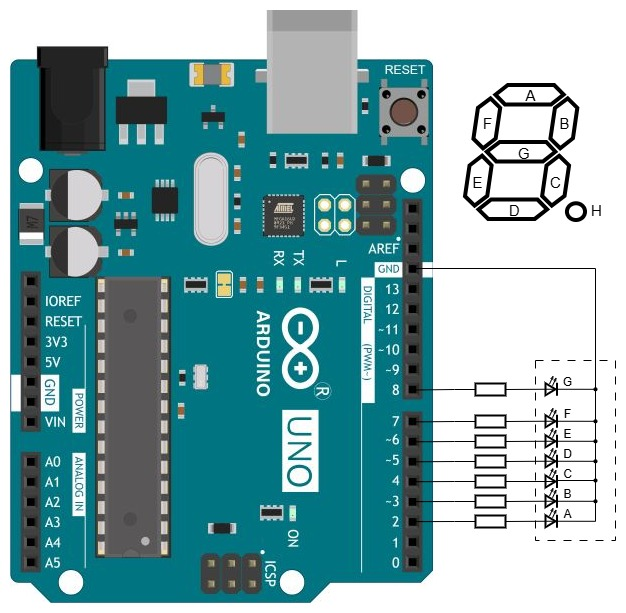

Задача — отображать переданную через терминал цифру на подключённом к Arduino UNO семисегментном индикаторе с общим катодом.
Семисегментный индикатор представляет собой модуль из семи светодиодов (сегментов) с возможностью формирования цифр и знаков путём включения части сегментов. Все светодиоды соединены внутри модуля одноимённым электродом, например, катодом, который выведен наружу одним выводом; второй электрод каждого светодиода выведен индивидуально. Очень часто в индикаторе есть ещё запятая или точка, так что анодов восемь. Общий катод соединяют с линией GND, а чтобы зажечь сегмент, на его анод через токоограничивающий резистор подают положительный потенциал.
Ни в одном из портов B и D нет семи свободных выходов для подключения индикатора, так что шесть сегментов A-F подключим к порту D (пины 2-7), оставшийся сегмент G к порту B (пин 8). В программе для каждой цифры 0-9 предусмотрим схему отображения — байт, в котором младший (нулевой) бит соответствует сегменту A, первый бит сегменту B, ..., шестой бит сегменту G. Если бит конкретного сегмента равен 1, то соответствующий сегмент светится, иначе погашен. Чтобы отобразить на индикаторе цифру, схему её отображения следует разделить на две части и записать каждую часть в соответствующий порт так, чтобы не повлиять на состояние других линий портов. Перед этим нужно погасить все сегменты.
Катоды индикатора через токоограничивающие резисторы подключены к пинам 2-7 и пину 8 Ардуино (соответственно, сегменты A-F и G), аноды к +5 В. На старте программа гасит все сегменты.
Цифру 0-9, подлежащую отображению, вводят с клавиатуры компьютера в теминале (например, в мониторе последовательного порта Arduino IDE). Программа в микроконтроллере Arduino читает байт из буфера последовательного порта:
char c = Serial.read();
byte n = c - '0';
Далее программа берёт заранее заданную схему отображения принятой цифры (байт) и сдвигом этого байта в соответствующую сторону на соответствующее количество позиций формирует байт для вывода в соответствующий порт.

Текст программы содержится в файле Ind_y_Ardu.ino, который можно получить с Github по ссылке.
Как вариант, можно получить с Github весь репозиторий цикла "Ардуино и индикаторы" и выполнить команду
git restore -s 7seg01 -- Ind_y_Ardu.ino
Файл Ind_y_Ardu.ino в рабочей области будет перезаписан требуемой версией.